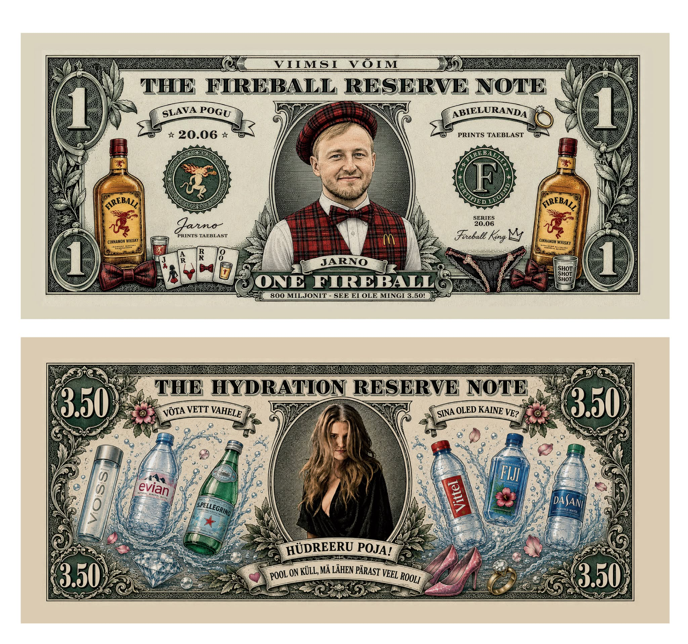
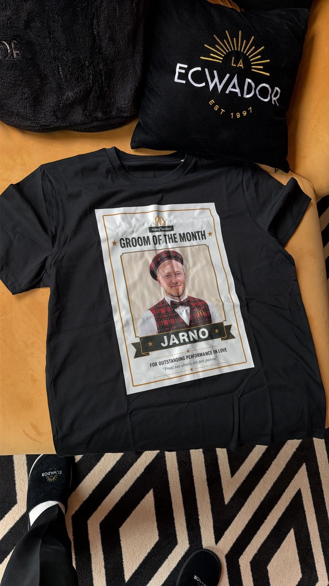
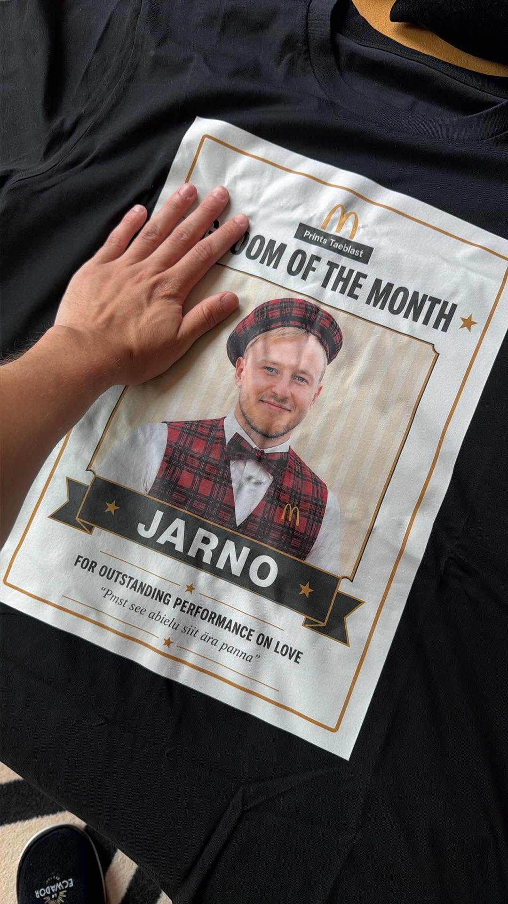
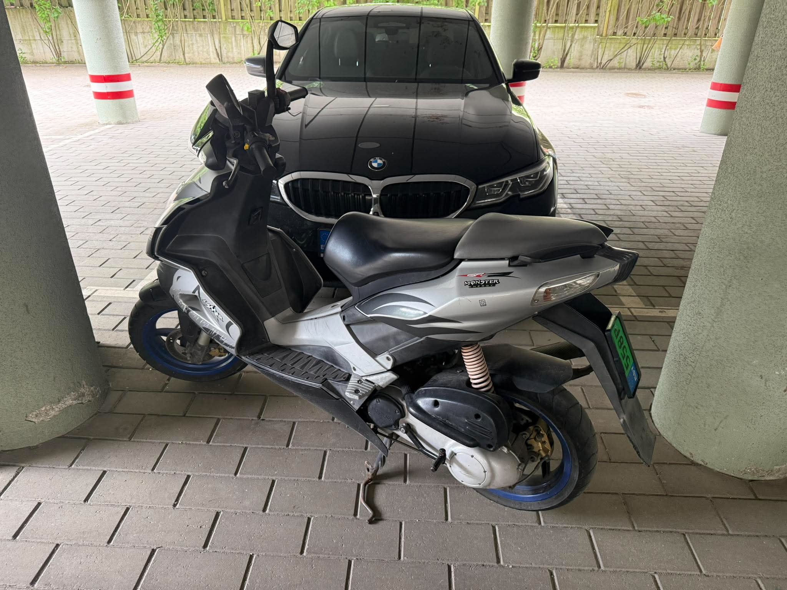

Päevakava
Marsruut: Pirita → Ääsmäe → Taebla → Kirimäe → Haapsalu → Roosta. Pidžaamast pole juttu.
Kohtumine Pirita Snack Pointis
Hommikul toovad Mikk ja Raino Jarno ukse taha klassikalise Aprilia SR50 — koputavad kolm korda ja teevad sääred. Jarno paneb täis-Valdise kostüümi selga ja sõidab nooruspõlve ikoonmasinaga Pirtale. Bussijoogid on ette ostetud ja Snackpointi kaasa võetud.
Pirita Selver — käe kaalumine
Kaalume pea ja käe. Ennustused: palju kaalub peigmees päeva lõpuks?
Bussisõit Läänemaale
Teel viktoriin peigmehe elust.
Ääsmäe Hipodroom — traavisõit 🐎
Enne Taeblat teeme peatuse Ääsmäe Hipodroomil, kus Jarno saab traavisõidu kogemuse. Kui ei kinnitu, toimub vahepeal midagi alternatiivset.
Teine sihtpunkt: Taebla
Retk Taeblasse giididega — peigmees, vend ja isa viivad läbi ekskursiooni paikadesse, mis kujundasid legendi nimega Jarno. Dokumenteerime polaroidkaameraga, kus ta ärandas esimese Opel Vectra 2.4 V6, kus pätsas turbonätsu, tekitas Läänemaa suurima kulupõlengu ning võitis ja kaotas oma esimese kakluse.
Lõuna · Iveria restoran 🇬🇪
Kinnitatud! Gruusia köök Iverias, poolel teel Taebla ja Haapsalu vahel. Laud broneeritud kell 14:00 — paneme šaššarid sisse.
Start Kirimäe suunal
Bussis laulud.
Kirimäe saare supluskoht
Viimane suplus vaba mehena — „Põgene, vaba laps” saatel jooks merre. Seejärel ametlik poissmehepõlve hüvastijätt: kõige rumalama rannapildi konkurss ja rahvahääletus.
Haapsalu kesklinn — „naisevõtt”
Viimane praktiline eksam enne abiellu astumist. Ülesanded: saada „õnge otsa” vähemalt üks naisterahvas (mida rohkem, seda parem), lunida välja vähemalt üks põsemusi ja veenda komisjoni, et tegu on kultuurilise traditsiooniga. Lisapunkte: loomulikkus, enesekindlus, kalamehejutu kvaliteet.
Neljas sihtpunkt: Haapsalu majutus
Endla hostel broneeritud. Õhtusöök kaetud — orgunnime pizzad kohale ja valmistume Termikaks.
Getting ready — Jarnost saab Jaagup Kreem
Ekside minemalennutamine hiina laternaga, taustal lugu „Fly on the Wings of Nurm”.
Sõit Roostale — Open Mic Roast
Haapsalust Roostale: „Jorts kadunud 60 sekundiga”.
Termikas 🔥 — Roosta jaanipidu Terminaatoriga
Õhtu põhiprogramm Roosta Puhkeküla välilaval. Väravad avati juba 19:00, õhtut veab DJ ja õhtujuht Rivo Rehe — jaanimängud, disko ja jaanipärgade punumine. Umbes kell 22:00 astub lavale Terminaator oma võimsa live-kontserdiga, pärast kontserti jätkab DJ disko. Toidu eest hoolitsevad Roosta Catering ja Linnamäe Lihatööstus, jook tuleb Coronalt & A. Le Coqilt. Pidu kestab kella 01:00-ni.
Sõit tagasi Haapsallu
Peobuss väljub Roostalt kell 01:00 (võtab rahva peale Elbiku bussipeatusest suure tee äärest).
Hommikusöök
Nurme Bistroo (broneerida): 53987662.
Aftermath · Lastekodu 24
Kes jaksab, see jaksab — rahulik häng ja taastumine. Üleüldine söök, jook jne.
Osalejad
19 meest kinnitanud · 1 veel kaalumisel.
Eelarve
Kinnitatud kulud. Jagatud 17 maksja vahel.
| Bussirent | 496 € |
| Majutus (Endla hostel) | 694 € |
| Söögikoht | 270 € |
| Termikas + buss Roostalt tagasi | 425 € |
| 9 Luxi piletit | 72 € |
| Plakat A4 | 43,40 € |
| Valdise kostüüm | 35 € |
| McJarno särk | 27,50 € |
| Kulud kokku | 2062,90 € |
Aktiviteetide ideed
Veel kaalumisel / varuks.
Merch & valuuta
Päeva ametlik varustus. Henri valuuta, Prints Taeblast kollektsioon ja ikoonmasin.



